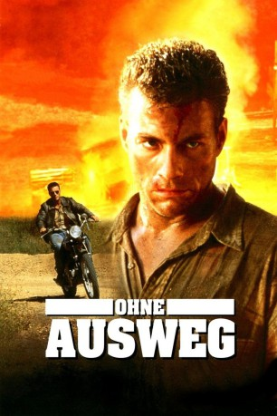

#7771 Ohne Ausweg
Alternativ: Nowhere to Run
 
 IMDB-Wertung: 5.6 / 10
IMDB-Wertung: 5.6 / 10  Metascore: 0
Metascore: 0 
Der Häftling Sam Gillen bricht aus und findet bei der attraktiven Clydie Anderson Unterschlupf. Ein skrupelloser Immobilienhai will die Frau zum Verkauf ihres Besitzes zwingen. Doch Sam steht ihr bei und rechnet mit dem Schurken ab.
Jahr: 1993
Dauer: 94 Minuten
FSK: 18
Land: USA Studio: Columbia PicturesTonspuren: DD2.0 - ,
Untertitel:
Auflösung: 1080p (1920x1040) Größe: 6963 MB
Genre: Action, Thriller, Drama, Krimi, Liebe
Regisseur: Robert Harmon
Drehbuch: Joe Eszterhas
Soundtrack: Mark Isham
Darsteller:
Datei: X:\FSK18-1900-1999\Ohne Ausweg (1993, FSK18, 1920x1040).mkv seit 15.12.2017
Festplatte: FSK18
 Es gibt insgesamt 108 Filme in der Gruppe 'FSK18-1900-1999'
Es gibt insgesamt 108 Filme in der Gruppe 'FSK18-1900-1999'